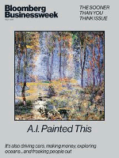
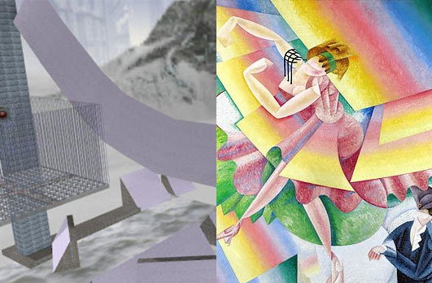
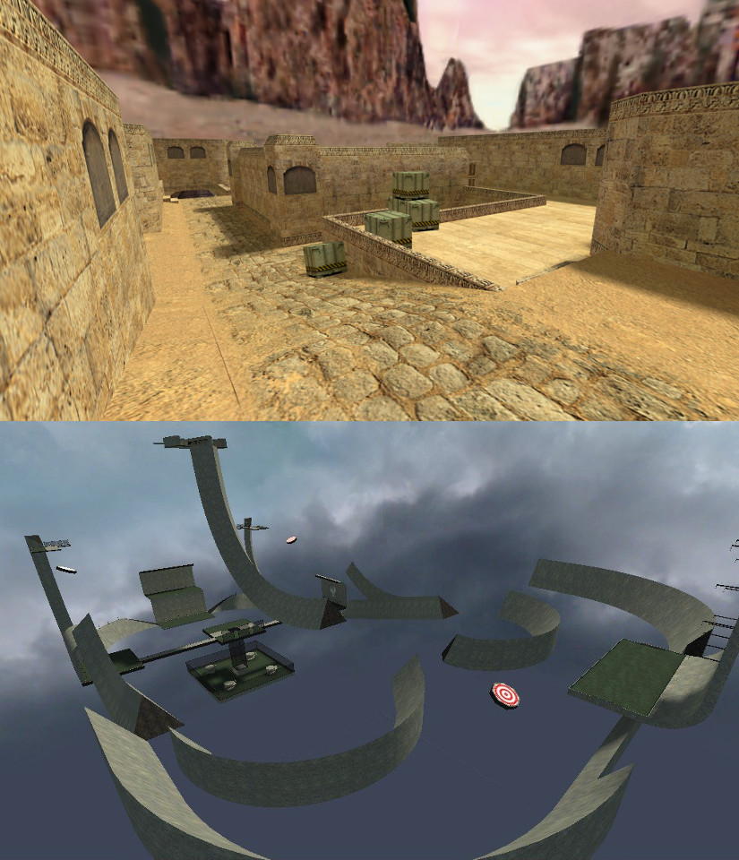

|
updated 7:20 p.m. 4.Dec.98.PST |
|||||
|
|
|||||
|
SECTIONS |
| Links! |
| L'Avant Galerie Vossen |
| FREE DELIVERY |
| SHOWINGS |
| "AUTOMAT UND MENSCH": Zurich |
| 'SYSTEM FAILURE': San Francisco |
| "TECH ART": Artjaws, New York City |
| "BARRAT/BARROT": Paris |
| STOCKS |
| Quotes (enter ticker): |
| Today's Summary |
| Indexes |
| Portfolios |
| BLOOMBERG COVER 2018 |
|
 May 2018 Issue |
| Read the feature! |
| HOTWIRED |
|
Front Door Webmonkey Web 101 RGB Gallery Animation Express Suck.com |
| HOTBOT |
|
Search Shopping |
|
Robbie Barrat News staff Robbie Barrat News is hiring Contact us Robbie Barrat News delivered by Outlook Express, In-Box Direct, or BeefCast |
|
|
Counter Strike Surf and Futurist Dance  Left: "surf_ski_2", a CS surf map Right: "Dancer" , Gino Severini (1915) - a futurist/cubist painting about dance [This is just the intro - fleshing out the basic goal and providing context.] [It will be complete with interviews with different cs surfers, mappers, etc. around the end of December.] [In the full piece, I try and argue a very close connection between futurist dance and counter strike surf, as well as proposing a new dance-focused type of surf, and a map that this type of surf can be played on.] Introduction Surf is a community made gamemode for "Counter Strike" - a first person shooter game developed by Valve software. Typically Counter Strike (CS) gameplay revolves around two teams, the terrorists and counter terrorists, both starting at opposite ends of a playable area. Terrorists try to plant a bomb at a designated site, while the counter terrorists have to prevent this. The mechanics of the game are relatively vanilla; almost entirely walking and shooting, with an emphasis on strategy and team communication. In Surf, players navigate an area made by a member of the surf community; consisting of long sloped surfaces called ramps, and due to inconsistencies in the way the game engine processes movement, players can slide on these ramps and gain huge amounts of speed, as well as redirect this speed mid air. A person needs to commit thousands of hours to surf before becoming proficient.  Top Picture: de_dust2, an offical counter strike map that comes with the game. Bottom Picture: surf_buck-wild, an ordinary combat surf map. Note that there is no such thing as an 'official surf map'. Throughout the piece I will have dialogue with different cs surfers, mappers, and dancers- to discuss: - The immediate link between speed in futurism and speed/momentum in surf (specifically in a type of surf called skill surf) - The notion that futurist dance serves to express man's ultimate fusion with machines (described in Marinetti's 'Manifesto of Futurist Dance', 1917), and how it relates to the idea of surf as dance done on a machine with a virtual body - Similarities between dance choreography and surf mapping - A type of surf called trick surf; its history, differences from other types of surf, and its connections to dance vs sport - Ultimately the creation of a surf map that belongs to a new type of surf, prioritizing movement for movements sake, and a focus on performance instead of competition with observation areas of the map "Counter-Strike Surfing in Third Person" Uploaded Dec. 2008 by CounterStrikeCo |
||